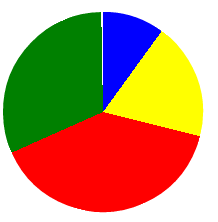

reflection on types of tweets
January 04, 2015
Dan Moore has an interesting way of looking at tweets, analyzing what kinds of tweets — “conversational posts” perhaps a question, provocative statement or something else, vs sharing links, retweeting or replies.
Here’s my chart from Twitversation:

Out of the last 200 tweets, ultrasaurus had 20 conversational posts (blue), 38 posts with a link (yellow), 79 retweets (red), and 63 replies (green).